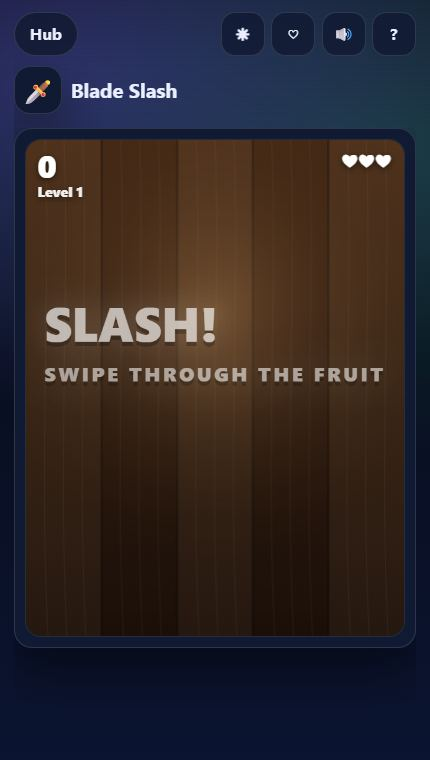
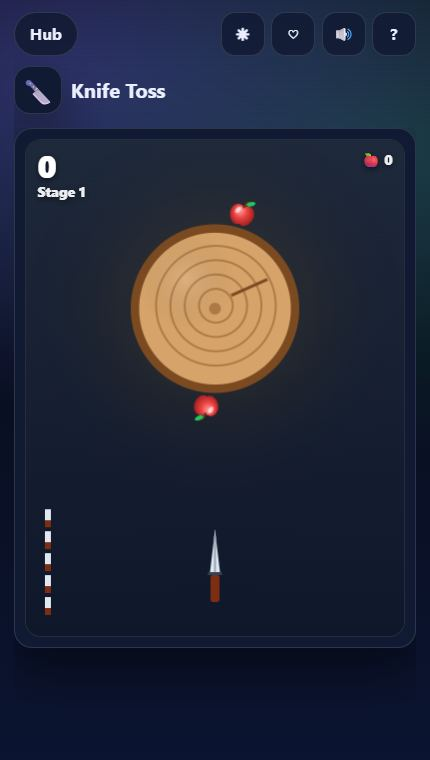
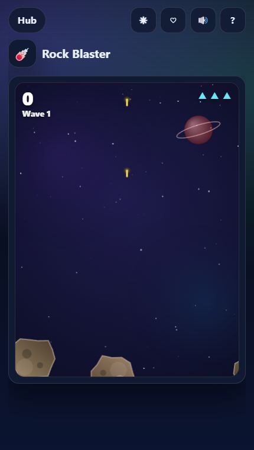
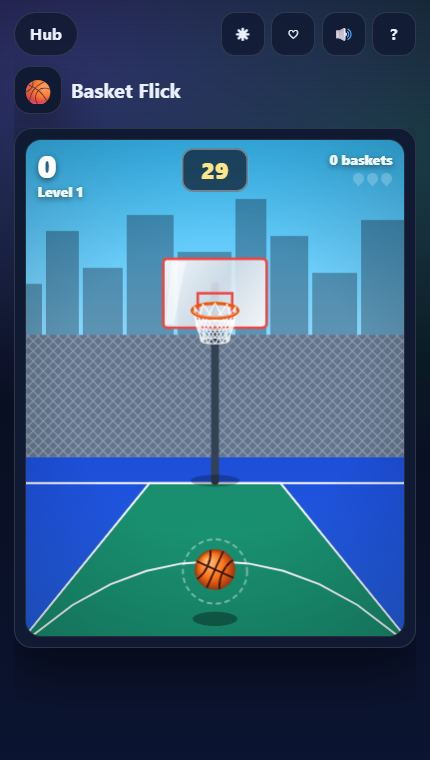
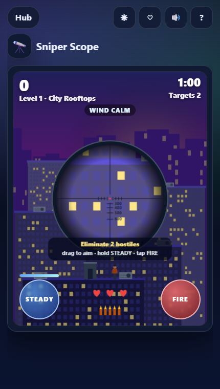

The best break games share three traits: you understand them in one second, a run lasts minutes not hours, and there is always a reason for "one more". All seven below have missions and coin upgrades, so even a short session moves you forward.

Blade Slash
Swipe to slice flying fruit; three or more in one swipe is a combo. Drop a fruit or slash a bomb and you lose a life. Specials add frenzy, slow-mo and extra lives — and the Golden Melon pays out every time you hit it.

Knife Toss
Tap to throw knives into a spinning target and never hit a blade that is already stuck. Apples on the rim are bonus points; every 5th stage is a boss with surges and reversals.
Tip: throw on the rhythm of the spin, not when a gap looks big.

Rock Blaster
A touch-friendly take on the arcade classic: drag to steer, the ship fires on its own. Big rocks split into faster small ones; UFOs from wave 2 drop power-ups like triple shot and shield.

Neon Racer
Weave through night traffic; near misses build a combo and fill the NITRO ring, which lets you smash through cars. Watch for blinkers, oil slicks and police chases.

Basket Flick
Swipe up to shoot: direction aims, length sets power. Every basket adds time, swishes add more, and three swishes in a row set you on fire for double points.

Helix Drop
Spin the tower to drop the ball through gaps, avoid red segments, and fall through three rings in a row to become a fireball that smashes anything. 30 hand-built towers, then endless ones.

Sniper Scope
The thinking person's action game: read range and wind, hold STEADY to calm the sway, and never hit civilians. Thirty missions with stars for accuracy and headshots.
Make every short run count
- Chase one mission at a time. The idle screen of each game shows the next goals — pick one and play for it.
- Buy survival upgrades first. An extra life or shield turns a 1-minute run into a 3-minute one.
- Use the free revive. On the web version, the one revive per run costs nothing — no ad to watch.
Prefer a slower pace? Try our 12 best browser games list or the memory game routine. Everything is in the TTGO Play Hub.